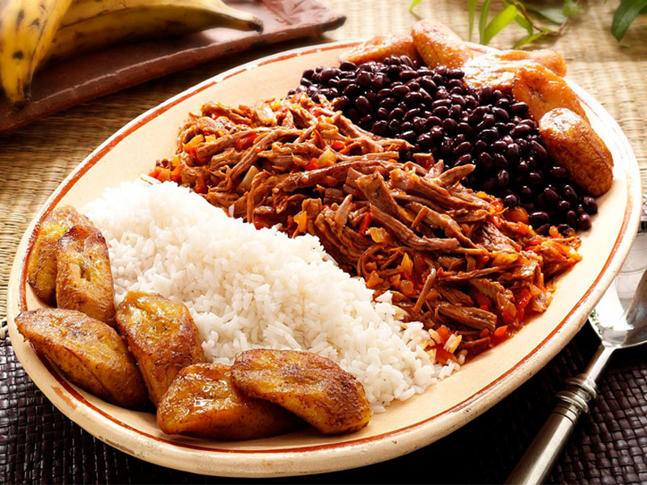

PABELLON

El pabellón criollo es uno de los platos más emblemáticos de la gastronomía venezolana, y su origen
se remonta a la época colonial. Durante la colonización española, Venezuela era una de las principales
regiones productoras de carne y ganado en América Latina. Los esclavos africanos que fueron traídos a
Venezuela para trabajar en las plantaciones de caña de azúcar y en la industria ganadera eran
responsables de cocinar para los hacendados y sus familias. Con los ingredientes disponibles en la
época, crearon una serie de platos que mezclaban influencias africanas y españolas.
INGREDIENTES
- 1/2 kg caraotas negras
- 2 cebollas medianas
- 6 ajíes dulces verdes y rojos
- 1 cabeza ajo
- 1/2 cdts pimienta negra
- 1/2 cdts orégano molido
- 1 tallo cebollín
- 1 cda azúcar
- 1/2 kg falda de res o muchacho redondo
- 1 1/2 tazas arroz
- al gusto Sal
- 1/2 taza aceite onotado
- 2 plátanos maduros
PASOS
-
Por un lado poner a remojar las caraotas durante 4 horas aprox., lavarlas y ponerlas a cocinar en suficiente agua hasta q estén blanditas.
-
Aparte poner a sancochar la carne picada en trozos hasta q esté blandita, sacar del caldo y dejar reposar para poder esmechar con los dedos. (reservar el caldo).
- Picar finamente todos los aliños y poner a sofreir con el aceite onotado, ajo triturado, pimienta y orégano en un sarten o caldero mediano, apartar 2 ó 3 cucharadas de los aliños ya sofritos y agregarselas a las caraotas q ya deben estar blanditas, junto con el azúcar y sal al gusto, dejar cocinar las caraotas unos 15 minutos más sin que sequen demasiado.
-
En el sartén o caldero donde tenemos el resto de los aliños, agregamos la carne ya esmechada, freimos un poco revolviendo para q se mezcle con los aliños y le agregamos una taza del caldo donde sancochamos la carne, agregar sal al gusto y dejar cocinar hasta que se consuma todo el caldo.
- En una olla mediana poner a calentar 2 tazas del caldo restante, agregar sal al gusto y el arroz, dejar cocinar hasta que esté en el punto deseado.
- Aparte en una sarten colocar aceite y freir los plátanos cortados en tajadas.
- Servir como se muestra en la presentación.
Volver a pagina principal